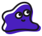

Free
0 ₽
no time limit
- Sample lessons
- Lessons from your teacher
- A report for your teacher
- Word deck with reviews
- One lesson of your own to try
Paste your homework or a topic, then learn the rule, practise, answer out loud and send the results to your teacher
Create my lesson
Your teacher's notes, made clear. The rule in plain words, with examples. Translate any phrase and save new words
A mistake is part of the page. Check every answer at once. Not right? Try again and see why
The same rule in conversation. Read a short dialogue and choose the modal that fits the situation
Say it before the lesson. Record your answer and get suggestions for clearer English
Bring this to your lesson. A short report for your teacher: what went well, what you fixed, your new words
Forgot it? You’ll see it again in 8 minutes. Got it? In a day, a week, a month
tap the card to flip it ↑
Open any notebook. Each one is a complete lesson
Free
0 ₽
no time limit
Plus · soon
349 ₽
a month, or 2,990 ₽ a year
Your teacher can pay for Plus for you